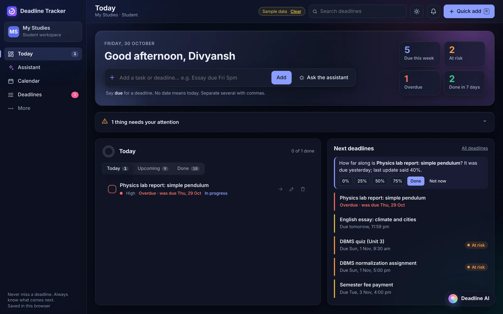

Missing important deadlines
Assignments and labs slip through the cracks when they're scattered across WhatsApp chats, portals and emails.
Team NEXORA presents
Turning student chaos into organised success.
Deadline Tracker tells you whether you'll finish on time, not just what's due.
Presented by
The problem
Assignments and labs slip through the cracks when they're scattered across WhatsApp chats, portals and emails.
Students rarely forget a deadline completely. They start too late, because a 6-hour essay feels invisible until 2 hours before it's due.
Three heavy assignments and a midterm land on the same Thursday. The result: all-nighters and burnout.
No clear view of whether the current pace will finish the semester's work on time.
Our solution
Instead of an AI guessing, Deadline Tracker compares the work left with the free hours you actually have:
"You have 5h of DBMS lab work left and only 3h free before submission."
Planning runs on our own server. Tasks and schedules are never sent to an outside AI.
When something is overdue, Rescue Mode splits the rest into 25-minute steps and drafts an honest extension request you send yourself.
Pillar height = work leftCloser to the centre = less time
The real product

How it works
Type naturally in one box ("Java lab due Fri 5pm ~4h"), paste from a syllabus, or ask the assistant. No long forms.
The radar checks every deadline against your free time and warns you days before a crunch.
The planner spreads big tasks into 25-minute sessions across your days, within your daily limit.
Reminders come from the server in your time zone, and reports show your real on-time rate.
■ over your daily limit■ fitsglass plane = daily limit
Why it matters
| What students need | To-do lists | General AI tools | NEXORA Deadline Tracker |
|---|---|---|---|
| Know if you'll finish on time | Only shows due dates | Guesses, no formula | Explainable risk equation |
| Reminders when the app is closed | Tab must stay open | No reminder jobs | Server reminders in your time zone |
| Privacy of your schedule | Ad tracking and sync | Schedules sent to the model | Planning stays on our server |
| Help when you're already late | Turns red, adds stress | Generic motivation | Rescue Mode + extension draft |
| One place for everything | 3–4 separate tools | Text chat only | Today, radar, calendar, planner and AI |
Behind NEXORA
Led the architecture, the Node backend, the planning engine, and end-to-end integration.
Designed the interface, the Study Planner's focus sessions, the calendar, and the responsive layout.
Built the Deadline Radar maths, workload balancing, and saving across workspaces.
Built the Gemini help pipeline and its grounding, and much of the automated test suite (300+ tests).
Final vision
Plan smarter · stay ahead · deliver on time
Thank you.
Team NEXORA is ready for the panel's questions.